Theory for program bfk - Inelastic neutron-scattering from RE ions in a crystal field
including damping effects due to the exchange interaction with conduction
electrons
This is an extension of the theory published by Klaus W. Becker, Peter Fulde and
Joachim Keller in Z. Physik B 28,9-18, 1977 [4]
"Line width of crystal-field excitations in metallic rare-earth systems"
and an introduction to the computer program for the calculation of the neutron
scattering cross section. The computer program bfk is written by J. Keller,
University of Regensburg.
Here we present a brief outline of the theoretical concepts to calculate the
dynamical susceptibility of the Re ions and the scattering cross section.
The neutron-scattering cross section is related to the dynamic susceptibility
of the RE ions
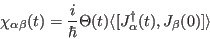
whose Fourier-Laplace transform
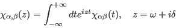
determines the inelastic neutron scattering crossection
(Stephen W. Lovesey; "Theory of neutron
scattering from condensed matter"
Vol 2, equ. 11,144).
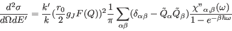
Here 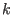 and
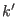 denote the wave number of the neutron before and after the
scattering.
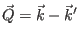 is the scattering wave vector,
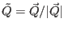.
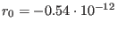 cm is the basic scattering length, 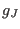 is the Landé factor,
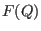 the atomic form factor of the
rare earth ion.
Formal evaluation of the dynamic and static susceptiblity.
The dynamic spin-susceptibilities are correlation functions of the form
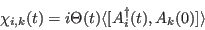
where 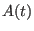 is a Heisenberg operator
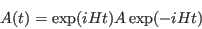
Introducing a Liouville operator (acting on operators of dynamical
variables) by
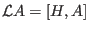 the Heisenberg operator can also be
written formally as
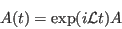
With help of this definition the dynamical susceptibility 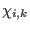 of
two variables 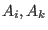 can be written as
and their Laplace transform
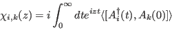
With help of the Liouvillian these quantities can be written as
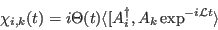
and their Laplace transform
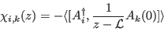
The static isothermal susceptibilities can also formally be calculated with help of
the Liouvillian.
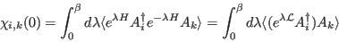
The static susceptibilities are used to define a scalar product between the
dynamical variables:
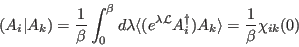
It fulfills the axioms of a scalar product and furthermore it has the important property
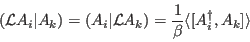
With help of this relation the dynamical susceptibility can be
expressed as
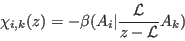
and finally as
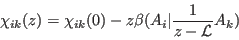
The second term is the so-called relaxation function
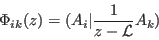
The model:
We calculate the spin susceptibility of a RE ion in the presence of exchange
interaction with conduction electrons. The system is described by the
Hamiltonian
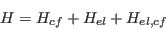
The first part is the cf-Hamiltonian of the spin-system:
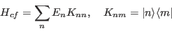
written in terms of the crystal field eigenstates
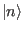.
The second part is the Hamiltonian of the conduction electrons
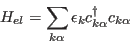
The third part is the
interaction between local moments and the conduction electrons
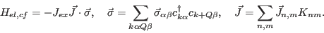
We assume, that the energies 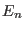 and the eigenstates
expressed by angular momentum eigenstates are known.
Definition of dynamical variables
In our case we use as dynamical variable the standard-basis operators
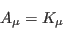
describing a transition 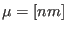 between CEF levels  and
and  .
In the absence of the interaction with conduction electrons
.
In the absence of the interaction with conduction electrons
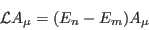
In order to
get the spin suceptibility we have to multiply the final expressions by the
spin-matrixelements:
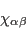
The idea of the projection formalism to calculate the dynamical
susceptibility of a variable is to project this variable onto a closed
set of dynamical variables  and to solve approximately the coupled
equations between these variables. For this purpose a projector is defined
by
and to solve approximately the coupled
equations between these variables. For this purpose a projector is defined
by
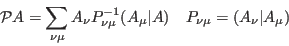
where
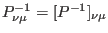 is the 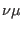-component of the inverse matrix of
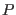.
For the resolvent operator of the relaxation function
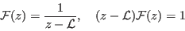
one obtains the exact equation
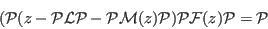
with the memory function
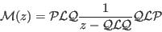
where
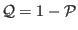. In components
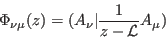
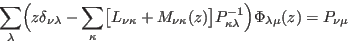
with
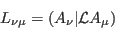
and the memory function
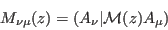
Now we apply the formalism to the coupled spin-electron system and restrict
ourselves to the lowest order contributions of the spin electron
interaction. As dynamical variables we choose a decomposition of the
original spin-variable:
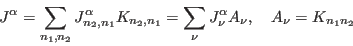
where 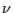 denotes a transition performed with the
standard-basis operator
.
In lowest (zeroth) order in the el-cf interaction
and the scalar product is diagonal in lowest order in the transition
operators,
where
is the thermal occupation number. For the
frequency term we then get
Neglecting the second-order energy corrections in the following we obtain
the equation for the relaxation function
and it remains to calculate the memoryfunction containing the relaxation
processes.
In lowest order in the electron-spin interaction
can be replaced by
.
Then we get for the memory function
with
Now
with
With help of the symmetry properties
with
we obtain
In order to calculate the relaxation functions
we use the general relation between relaxation function and dynamic
susceptibility
and calculate instead the corresponding susceptibility (using tr
):
We are interested in the imaginary part describing the relaxation processes:
Writing
and
we obtain
For the integrals we get
This makes
which has to be used to calculate the imaginary part of the memory function.
Writing
which also be written in symmetrized form as
we obtain with
from which we get the memory function matrix in the space of dynamical variables
Summary:
For the neutron scattering cross section we need the function
, where
is the frequency dependent part of the dynamic
susceptibility
for spin components ,, which is
related to the corresponding relaxation function
by
For the full dynamical susceptibility we need the static suseptibility
which in lowest order in the exchange interaction is given by
The above relaxation function is calculated with help of the Mori-Zwanzig
projection formalism by
where denotes a transition from to between crystal field
levels of the magnetic ion. The partial relaxation functions are obtained by
solving the matrix
equation
with
where
is the energy difference of cf-levels.
Only terms in lowest order in the el-ion interaction are kept. We neglect
frequency shifts due to the electron-ion interaction.
Then the memory function is purely
imaginary (with a negative sign).
Note that compared to our paper BFK, Z.Physik B28, 9-18, 1977 we have used here
a different sign-convention.
For numerical reasons it is more convenient to calculate the relaxation
function in the following way:
with
From the relaxation function we get for the dynamic scattering cross section
with
Here the scattering function depends only on the scattering vector
and the energy loss
Note that in our formulas  contains a factor and is the
energy loss. If we want to have meV as energy unit and Kelvin as temperature
unit, we have to write .
contains a factor and is the
energy loss. If we want to have meV as energy unit and Kelvin as temperature
unit, we have to write .
For the analysis of polarised neutron scattering the different
spin-components
of  are needed.
These are defined by
are needed.
These are defined by
with
The complex dynamic susceptbility is calculated from
where the static susceptibilities
are diagonal in our
approximation.